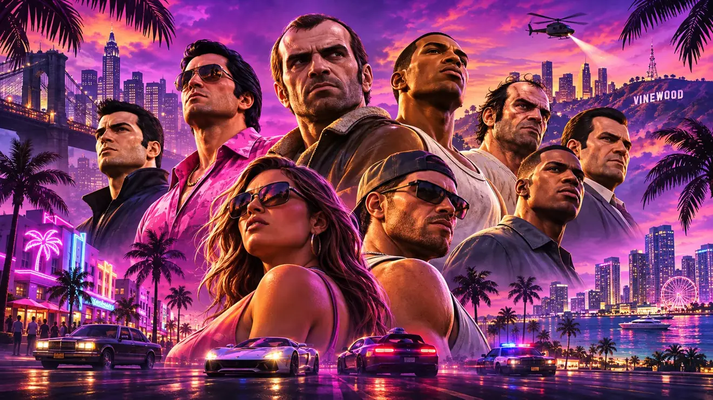
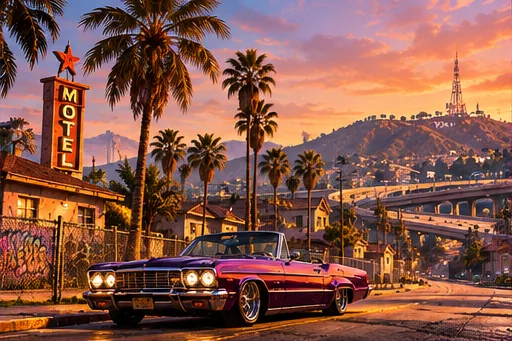
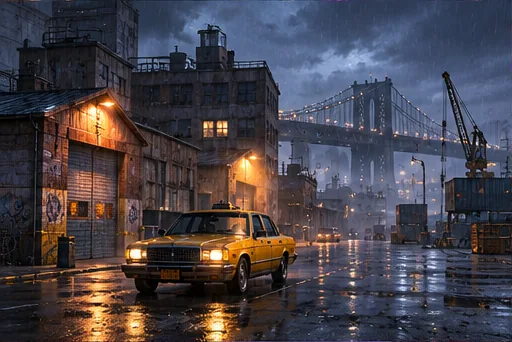
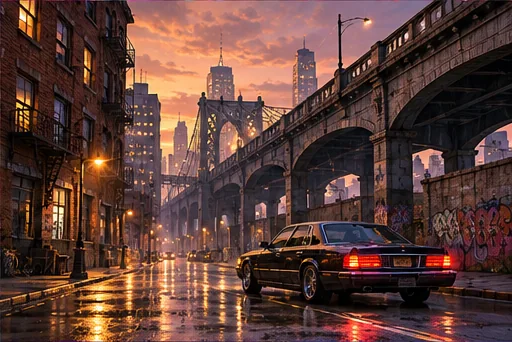
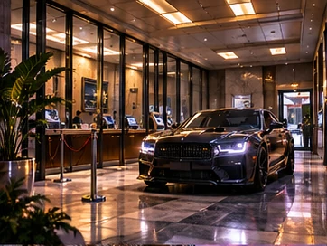
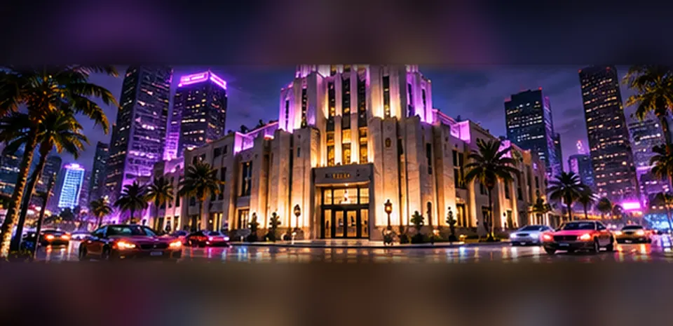
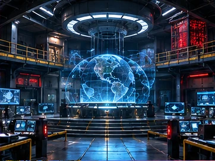
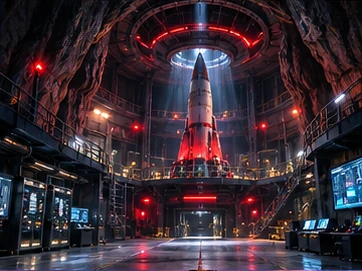
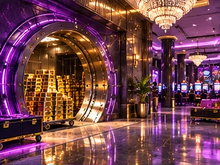
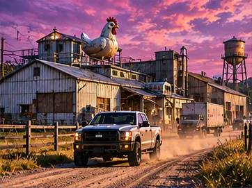

MAP DESTINATIONGTA V StoryLos Santos / Blaine County · interactive explorerInspect the real page ›
MAP DESTINATIONGTA V StoryLos Santos / Blaine County · interactive explorerInspect the real page ›01 / FOUR FLAGSHIP WORLDS
Game-specific map covers
Premium imagery identifies each destination; opening a card goes to the real interactive or schematic world rather than a static mockup.
MAP DESTINATIONGTA V StoryLos Santos / Blaine County · interactive explorerInspect the real page › MAP DESTINATIONGTA OnlineLos Santos Online · separate markers and progressInspect the real page ›
MAP DESTINATIONGTA OnlineLos Santos Online · separate markers and progressInspect the real page › MAP DESTINATIONGTA VI · LeonidaVice City / Leonida · provisional researchInspect the real page ›
MAP DESTINATIONGTA VI · LeonidaVice City / Leonida · provisional researchInspect the real page › MAP DESTINATIONCayo PericoIsland heist planning · schematic researchInspect the real page ›
MAP DESTINATIONCayo PericoIsland heist planning · schematic researchInspect the real page ›02 / UNIQUE DESTINATION HEROES
Actual site sections

SUBJECT-SPECIFIC HEROCharacters of GTACharacter archive: game-by-game profilesInspect the real page › SUBJECT-SPECIFIC HEROInteractive Map ExplorerActual zoom, map layers, filters and route toolsInspect the real page ›
SUBJECT-SPECIFIC HEROInteractive Map ExplorerActual zoom, map layers, filters and route toolsInspect the real page › SUBJECT-SPECIFIC HEROElario StudiosThe creative technology and studio experienceInspect the real page ›
SUBJECT-SPECIFIC HEROElario StudiosThe creative technology and studio experienceInspect the real page ›03 / NINE CLASSIC WORLDS
Nine individually themed era covers
These nine original cinematic raster concepts are attached to the real world directory. Each world opens its existing map or honest source-reference workspace. They are distinct art candidates, not verified in-game basemaps or finished owner-approved cover designs.
 CLASSIC WORLD · VISUAL REVIEWGTA IVLiberty City · rain and railOpen actual world workspace ›
CLASSIC WORLD · VISUAL REVIEWGTA IVLiberty City · rain and railOpen actual world workspace ›
CLASSIC WORLD · VISUAL REVIEWGTA San AndreasSan Andreas · sunset boulevardOpen actual world workspace › CLASSIC WORLD · VISUAL REVIEWGTA Vice CityVice City · neon beachOpen actual world workspace ›
CLASSIC WORLD · VISUAL REVIEWGTA Vice CityVice City · neon beachOpen actual world workspace ›
CLASSIC WORLD · VISUAL REVIEWGTA IIILiberty City · industrial docksOpen actual world workspace ›
CLASSIC WORLD · VISUAL REVIEWLiberty City StoriesLiberty City · elevated railwayOpen actual world workspace › CLASSIC WORLD · VISUAL REVIEWChinatown WarsLiberty City · Chinatown marketOpen actual world workspace ›
CLASSIC WORLD · VISUAL REVIEWChinatown WarsLiberty City · Chinatown marketOpen actual world workspace › CLASSIC WORLD · VISUAL REVIEWThe Lost and DamnedLiberty City · biker industrial yardOpen actual world workspace ›
CLASSIC WORLD · VISUAL REVIEWThe Lost and DamnedLiberty City · biker industrial yardOpen actual world workspace › CLASSIC WORLD · VISUAL REVIEWThe Ballad of Gay TonyLiberty City · nightlifeOpen actual world workspace ›
CLASSIC WORLD · VISUAL REVIEWThe Ballad of Gay TonyLiberty City · nightlifeOpen actual world workspace ›04 / DISTINCT HEIST EXPERIENCES
15 heists. 15 original cinematic scenes.
Every image opens a working, separate heist page with a saved progress checklist and real map-tool links. These are cinematic fan concepts, not verified in-game mission routes.

MISSION ART · ORIGINAL FAN CONCEPTFleeca JobDistinct cinematic mission environmentOpen real mission workspace › MISSION ART · ORIGINAL FAN CONCEPTPrison BreakDistinct cinematic mission environmentOpen real mission workspace ›
MISSION ART · ORIGINAL FAN CONCEPTPrison BreakDistinct cinematic mission environmentOpen real mission workspace › MISSION ART · ORIGINAL FAN CONCEPTHumane LabsDistinct cinematic mission environmentOpen real mission workspace ›
MISSION ART · ORIGINAL FAN CONCEPTHumane LabsDistinct cinematic mission environmentOpen real mission workspace › MISSION ART · ORIGINAL FAN CONCEPTSeries A FundingDistinct cinematic mission environmentOpen real mission workspace ›
MISSION ART · ORIGINAL FAN CONCEPTSeries A FundingDistinct cinematic mission environmentOpen real mission workspace ›
MISSION ART · ORIGINAL FAN CONCEPTPacific StandardDistinct cinematic mission environmentOpen real mission workspace ›
MISSION ART · ORIGINAL FAN CONCEPTDoomsday Act IDistinct cinematic mission environmentOpen real mission workspace › MISSION ART · ORIGINAL FAN CONCEPTDoomsday Act IIDistinct cinematic mission environmentOpen real mission workspace ›
MISSION ART · ORIGINAL FAN CONCEPTDoomsday Act IIDistinct cinematic mission environmentOpen real mission workspace ›
MISSION ART · ORIGINAL FAN CONCEPTDoomsday Act IIIDistinct cinematic mission environmentOpen real mission workspace ›
MISSION ART · ORIGINAL FAN CONCEPTDiamond CasinoDistinct cinematic mission environmentOpen real mission workspace › MISSION ART · ORIGINAL FAN CONCEPTCayo PericoDistinct cinematic mission environmentOpen real mission workspace ›
MISSION ART · ORIGINAL FAN CONCEPTCayo PericoDistinct cinematic mission environmentOpen real mission workspace ›
MISSION ART · ORIGINAL FAN CONCEPTCluckin' BellDistinct cinematic mission environmentOpen real mission workspace › MISSION ART · ORIGINAL FAN CONCEPTAuto Shop ContractsDistinct cinematic mission environmentOpen real mission workspace ›
MISSION ART · ORIGINAL FAN CONCEPTAuto Shop ContractsDistinct cinematic mission environmentOpen real mission workspace › MISSION ART · ORIGINAL FAN CONCEPTAgency VIPDistinct cinematic mission environmentOpen real mission workspace ›
MISSION ART · ORIGINAL FAN CONCEPTAgency VIPDistinct cinematic mission environmentOpen real mission workspace › MISSION ART · ORIGINAL FAN CONCEPTKortz CenterDistinct cinematic mission environmentOpen real mission workspace ›
MISSION ART · ORIGINAL FAN CONCEPTKortz CenterDistinct cinematic mission environmentOpen real mission workspace ›05 / DEVICE CHECK
Tap the actual map zoom controls
The GTA V, GTA Online and Leonida map pages now include separate + / − / FIT controls designed to avoid the former overlapping map navigation. Check each on your iPhone and switch 2D/3D where available.
06 / APPROVAL GATE
What is still unfinished
The nine classic GTA destination covers are installed for visual review, but do not count as owner-approved. Distinct cinematic imagery for all fifteen heist pages is staged, but still awaits owner visual approval. Premium weapons, vehicles, wildlife, character-specific portraits, full map/3D parity, the finished Last Ride film, and final mobile/desktop screenshot signoff remain unfinished. This staging page does not certify those as complete.
GTA VI imagery is original provisional fan concept art, not a confirmation of unreleased in-game locations. Game titles are identifiers only; Rockstar Games and Take-Two Interactive own their respective intellectual property.
Sources & attribution ›